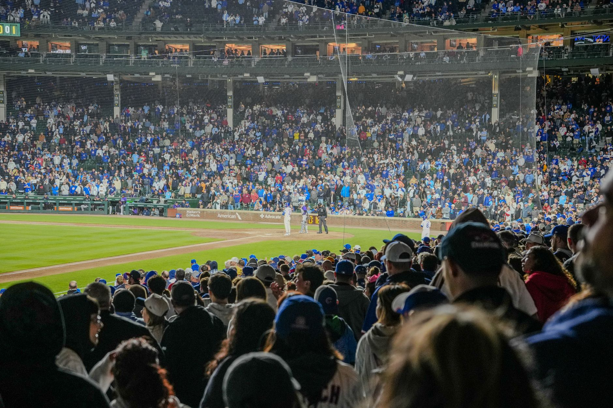

The top tier teams control their own destiny
The latest MLB Power Rankings for the week of August 30, 2026, paint a clear picture of the league's elite. A handful of teams have separated themselves from the pack with consistent pitching, timely hitting, and deep bullpens that can withstand the pressure of a pennant race. These frontrunners have spent the season building substantial division leads and now face the challenge of staying sharp while managing workloads for their star players.
What separates the top-ranked clubs is not just raw talent but also experience. Teams that have been through the postseason grind before understand the importance of peaking at the right time. Managers of these leading clubs are already mapping out playoff rotations, monitoring innings for ace starters, and making sure key relievers get enough rest without losing their feel on the mound.
The teams that rise to the top of the Power Rankings in late August are usually the ones that have both the roster depth and the mental toughness to handle the grind of September baseball.
Surging contenders are making their move
Not every team in the upper half of the Power Rankings has had it easy all season. Several clubs have caught fire in the second half, riding hot bats and improved pitching staffs to climb the rankings week after week. These surging teams represent some of the most dangerous playoff threats because they carry momentum and confidence into the final weeks of the regular season.
The stretch run rewards teams that get hot at the right moment. A club that was hovering around .500 at the All-Star break can transform into a legitimate World Series threat by stringing together winning weeks in August and September. The Power Rankings reflect this dynamic, with several teams jumping multiple spots as they prove they can beat the league's best in head-to-head matchups.
Division races are heating up across both leagues
The American League and National League both feature tightly contested division races that will go a long way in determining the postseason bracket. In several divisions, the gap between first and second place is narrow enough that a single weekend series could flip the standings. This parity makes every game feel like a playoff matchup, even in late August.
Division winners gain a significant advantage in the modern playoff format, often securing a bye into the Division Series. That means the battle for first place is about more than just a banner. It is about rest, rotation alignment, and avoiding the chaos of the Wild Card round. Teams understand what is at stake, and the intensity on the field reflects the magnitude of each series.
The Wild Card races are equally compelling, with multiple teams fighting for the final spots. The Power Rankings capture this tension, with clubs jockeying for position on a weekly basis as series results shift the landscape. Fans of teams on the bubble are watching the standings daily, calculating magic numbers and hoping their squad can string together one more winning streak.
What to watch as September approaches
As the regular season enters its final month, the Power Rankings will continue to shift based on performance, injuries, and head-to-head results. Several storylines are worth monitoring closely. Star players returning from injury could provide a boost for borderline contenders, while unexpected slumps from key contributors could derail even the most talented rosters.
Pitching depth becomes the defining characteristic of championship teams in September and October. Teams that can send a reliable starter to the mound every fifth day and turn to a trustworthy bullpen in the late innings have a massive advantage. The Power Rankings reward clubs that have fortified their staffs, whether through trade deadline acquisitions or the emergence of homegrown talent stepping up when it matters most.
For fans looking for individual brilliance alongside team success, check out our coverage of Cubs Star Pete Crow-Armstrong Hits 3 Home Runs at https://dhyey.bond/blog/cubs-star-pete-crow-armstrong-hits-3-home-runs/. Star performances like that can single-handedly shift a team's trajectory in the stretch run and provide the spark a contender needs to lock down a playoff spot.
See Also
If you enjoyed this Baseball News article, check out Cubs Star Pete Crow-Armstrong Hits 3 Home Runs for more useful reading.